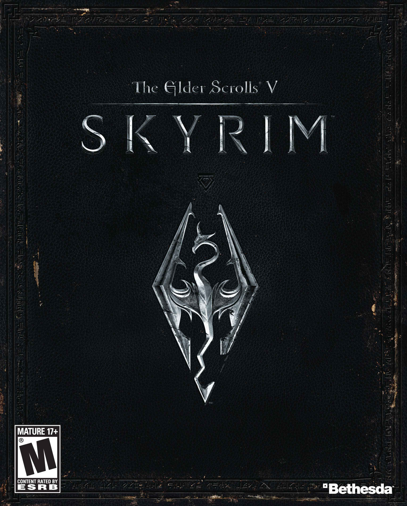
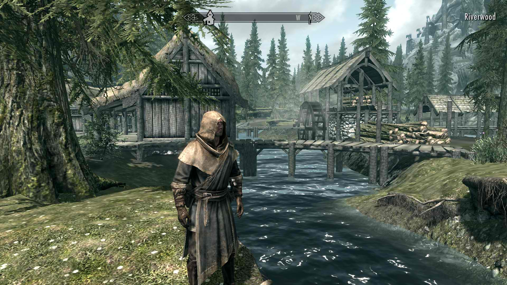
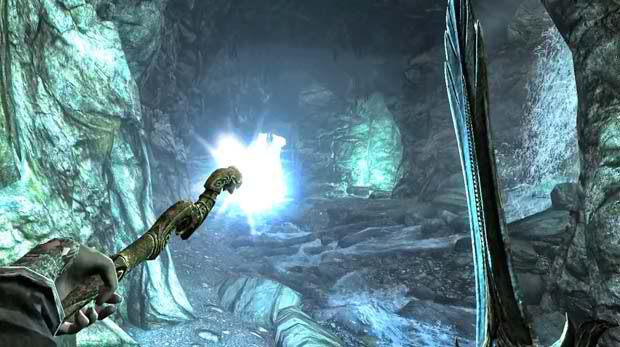
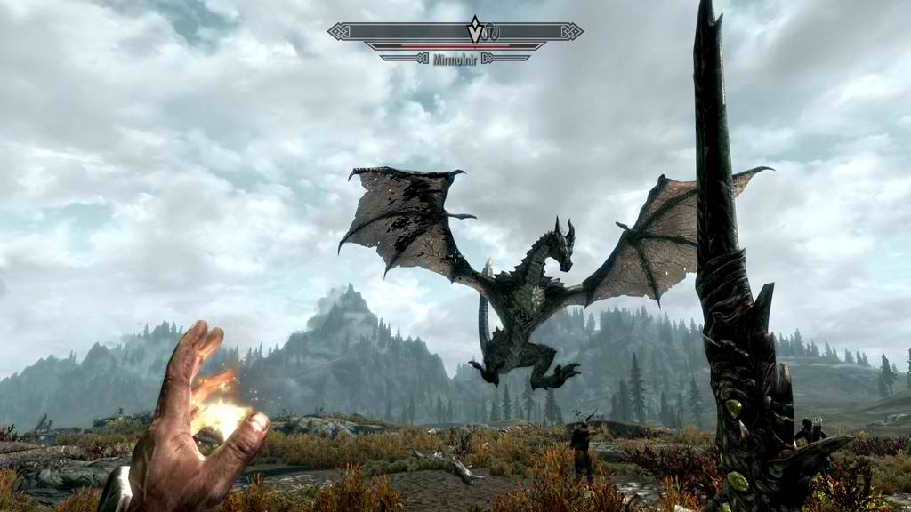
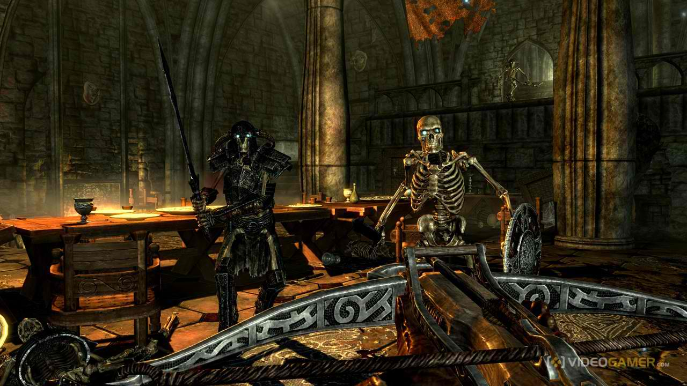
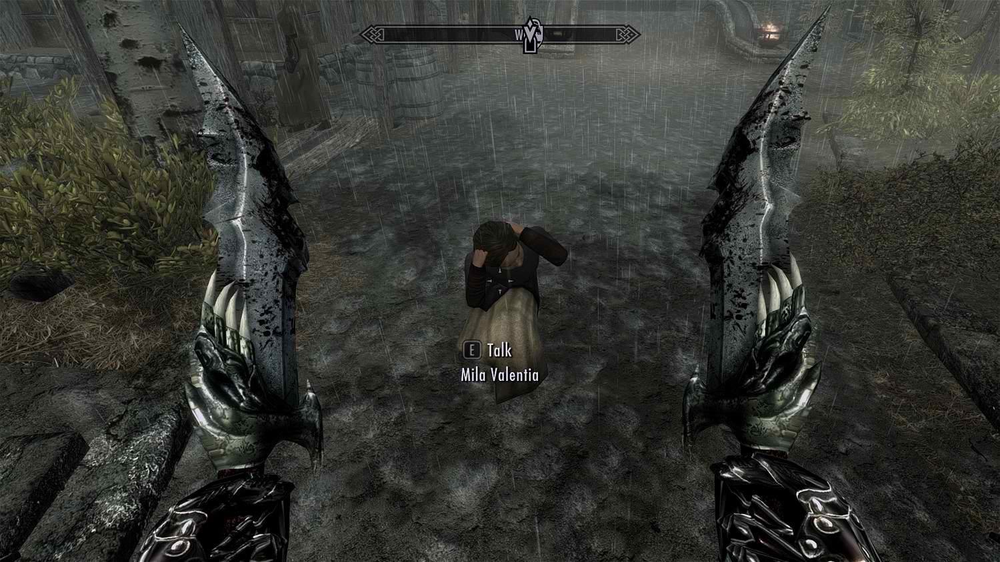
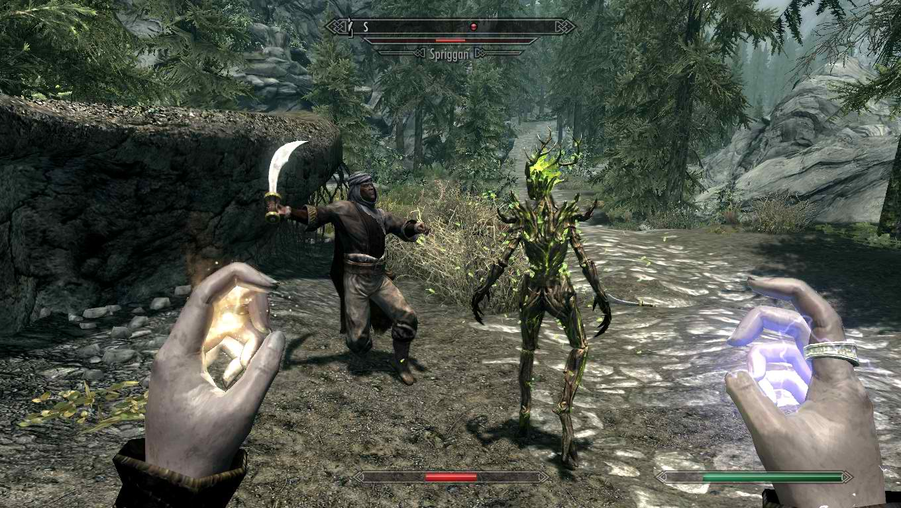

Overview:
The province of Skyrim might be frigid, but the role-playing game that takes place within it burns with a fire few games possess. In The Elder Scrolls V: Skyrim, you take up arms against dragons, and your encounters with them are invariably exciting--yet depending on where your adventure takes you, such battles may not even represent the pinnacle of your experience. A side quest that starts as a momentary distraction may turn into a full-fledged tale that could form the entirety of a less ambitious game. Yes, Skyrim is another enormous fantasy RPG from a developer that specializes in them, and it could suck up hundreds of hours of your time as you inspect each nook and crevasse for the secrets to be found within. If you know Bethesda Softworks' previous games, you might be unsurprised that Skyrim is not a land without blemish, but rather harbors any number of technical glitches and frustrating idiosyncrasies that tear open the icy veil that blankets the land. Many of them are ones Elder Scrolls fans will probably see coming, but they're ultimately a low price to pay for the wonders of a game this sprawling and enthralling.
| System Requirements | |
|---|---|
| Minimun System Requirements |
Windows 7/Vista/XP PC (32 or 64 bit) |
| Recommended System Requirements |
Windows 7/Vista/XP PC (32 or 64 bit) |
|  |  |
|  |  |  |  |